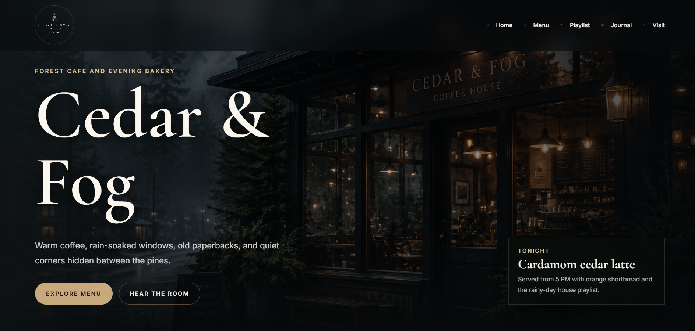

PROJECT
Cedar & Fog
Forest cafe & evening bakery

CLIENT
Cedar & Fog Coffee House
TYPE
Website Design & Brand Direction
MOOD
Forest / Rain / Jazz / Warmth
About the Project
Cedar & Fog is a cafe concept built around slow evenings, rain against old windows, warm coffee, and soft amber light.
The website was designed to feel like a place: atmospheric, cozy, and quietly alive. Menus, story sections, and calls to action carry the same mood from the first scroll to the final booking.
01
Atmospheric Worldbuilding
Forest photography and warm details make the concept feel immediately memorable.
02
Menu Storytelling
Food, drink, and mood are treated as part of one experience instead of separate blocks.
03
Slow Scroll Rhythm
The layout invites visitors to linger, explore, and imagine the space before visiting.